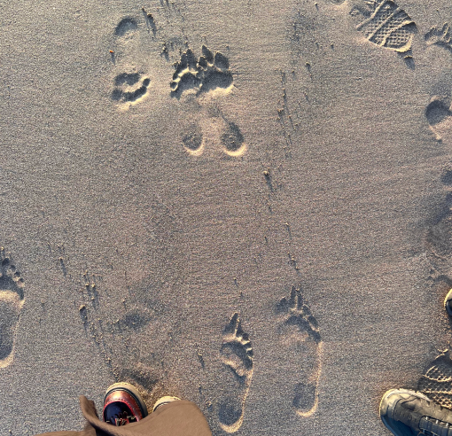
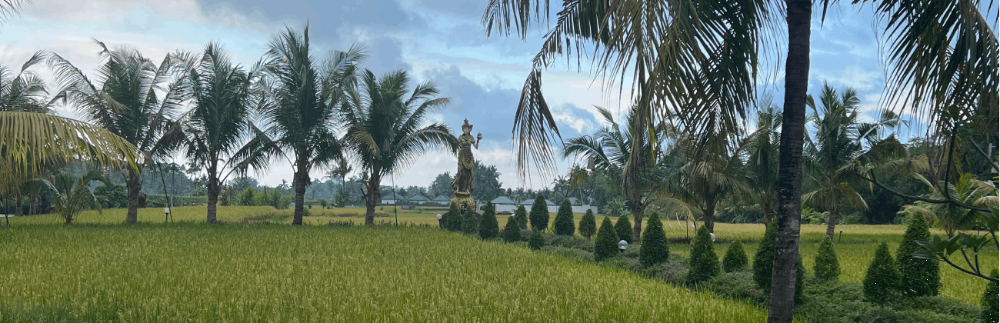

Dear Reader,
Welcome to my visual diary, my Arcadia...
Hi there! My name is Callista and I'm 21 years old currently studying Communications and Multimedia design. Welcome to My Arcadia, a place where you - the reader, can take a look through my journal I have spent in Bali, Indoensia. I'm born in Jakarta, Indonesia and moved to the Netherlands with my parents, brother and little sister when I was just about 5-years-old. We visit our home country often, to have family visits or just a nice long break from everthing and enjoy the rays of the warm sun hitting our skin while we lay on our backs in the sand. The second option is what I did the whole summer of 2022 and 2023 in Bali, the first time in 2022 with my lovely best friend, Melisa and in 2023 for the second time with my beloved boyfriend, Marlon.
I've come to appreciate the small things in life by looking around me, and being in the present moment entirely. So are these footprints in the sand, my boyfriend and I saw when walking in the morning at 7 A.M. when we couldn't fall aslee because of our extreme jetlag. We decided to catch the sunrise at the beach that is just a 15 minute bike ride from our villa. I want to show you the beauty through my eyes and the things I have experienced in my time in Bali.
I'm welcoming you into my memories and recollections, I hope you enjoy Bali through my point of view as much as I did myself. Who knows, maybe I'll see you there next time!
Love, Callista